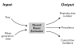

DERP uses recursive neural networks to solve inference problems in phylodynamics. In particular, it provides a way to estimate key aspects of an outbreak (e.g. the reproduction number and prevalence of infection) using a phylogeny reconstructed from genomic data.

If you are interested in deep learning with PyTorch, you might also like my blog.